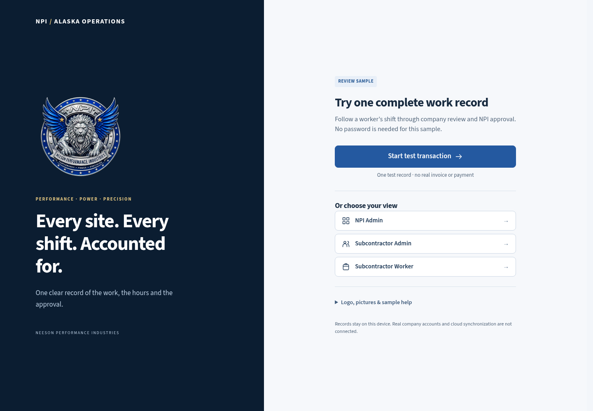
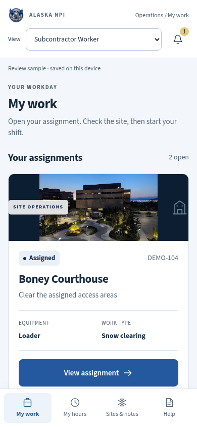
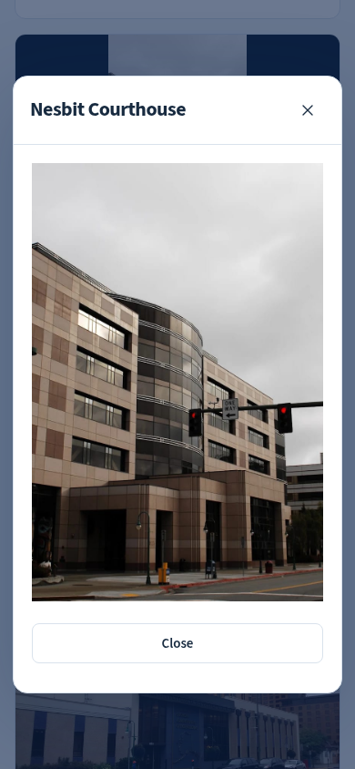
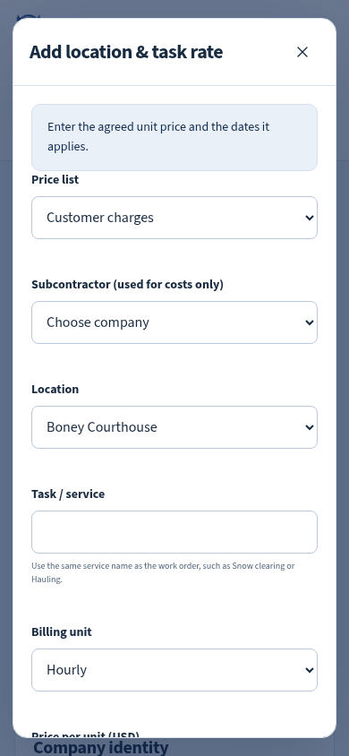
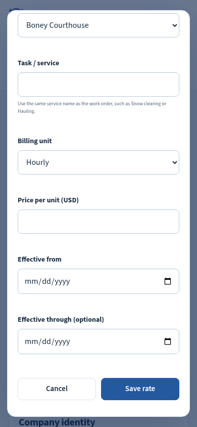
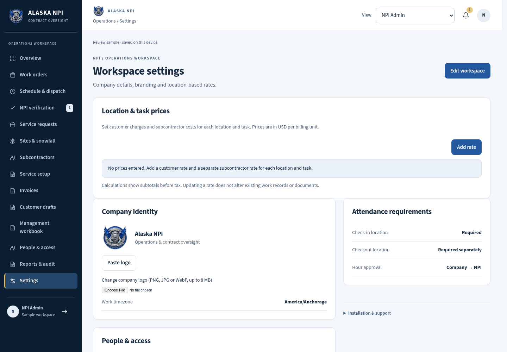

UI verified. Live operation blocked. Authentication, shared storage, synchronization, priced invoice issuance and domain binding remain unfinished.
Product Design audit guidance; current screenshots captured with local Chromium/Playwright and inspected, with axe runtime scans. This is not an independent certification or full WCAG assessment.
Domain setup · Installation guide
Transparent logo has no square backdrop. The branding region now has an accessible name. Three review-role entries and one primary test action are clear. Live company authentication is absent; role previews must not be used as authorization.

Site identity, equipment and the View assignment action are visible above bottom navigation at 390×844. Images are site references, not work evidence. This run does not verify actual device GPS or live tenant isolation.

The tall site photograph is contained in a named dialog with a reachable Close action. The exact viewport capture was inspected. Original site images remain unchanged. Address/site-boundary accuracy still needs management verification.

Separate customer/subcontractor lists and labeled billing units/dates are clear. The phone form scrolls; a second capture confirms Save rate and Cancel remain reachable. Calculations are local subtotals, not issued invoices.


Transparent logo is visible on white and navy surfaces. Operational settings precede collapsed Installation & support diagnostics. Account, storage and spreadsheet connections remain unfinished.

alaska.npi6030.com has setup instructions only. Cloudflare/DNS access and project hostname are unavailable; no DNS or HTTPS changes were made. Managed authentication, real server/RLS authorization, evidence storage, spreadsheet synchronization and priced invoice issuance remain unconnected. There is no valid live screenshot for this step.
104 browser checks, 32 unit tests and the Cloudflare build passed. Six current captured states have zero axe violations, horizontal overflow or JavaScript errors after fixing the welcome landmark label.
No full screen-reader/browser/device matrix, live GPS, backend integration, DNS/TLS or real authentication test was performed. The repository static audit still has 17 prior heuristic findings on older surfaces outside this package.
The transparent logo is an image-tool-assisted derivative of the supplied reference. Original site JPEGs are unchanged.